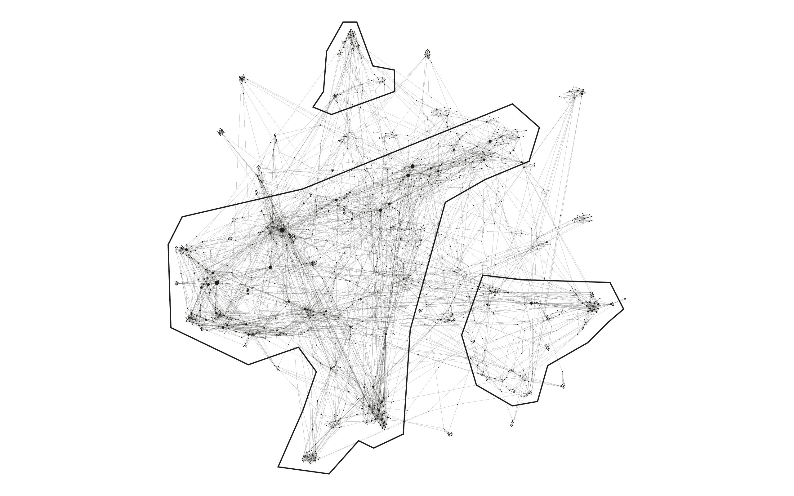
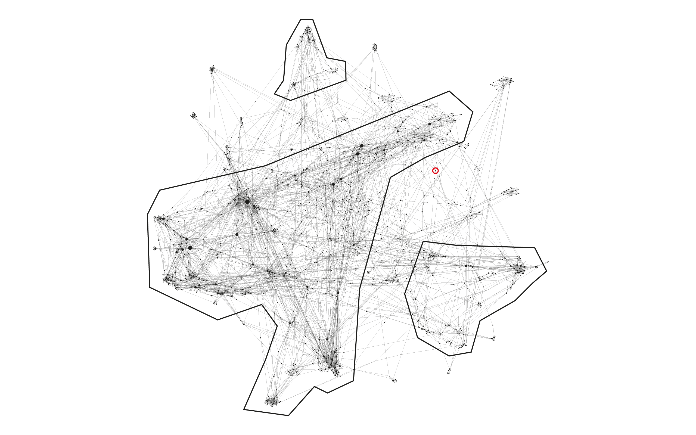

How to read the visualization
The graph above represents the net of connections between the Wikipedia pages related to the net neutrality one. The first thing we can see in this graph is the division in three main clusters (see the image here below).

It is easy now to recognize a bigger and more central cluster and two smaller ones. There are also many bridge clusters and external ones, but the most interesting fact is that the Net Neutrality page (in the red circle) doesn't belong to any of these clusters. We can see in the image below how it actually is in between two clusters.

The final visualization above presents a further codification: nodes are divided into two different categories, depending on the content of the pages: ethical terms are red, while technical ones are blue.
Finally, the dimension of the dots depends on their own inDegree, which means that the more a dot the more it was linked by others.
Clicking on the dots allows to isolate the nodes linking or linked to the one you clicked on. In order to fully understand the graph it's possible to zoom in and out in the visualization to see smaller nodes.